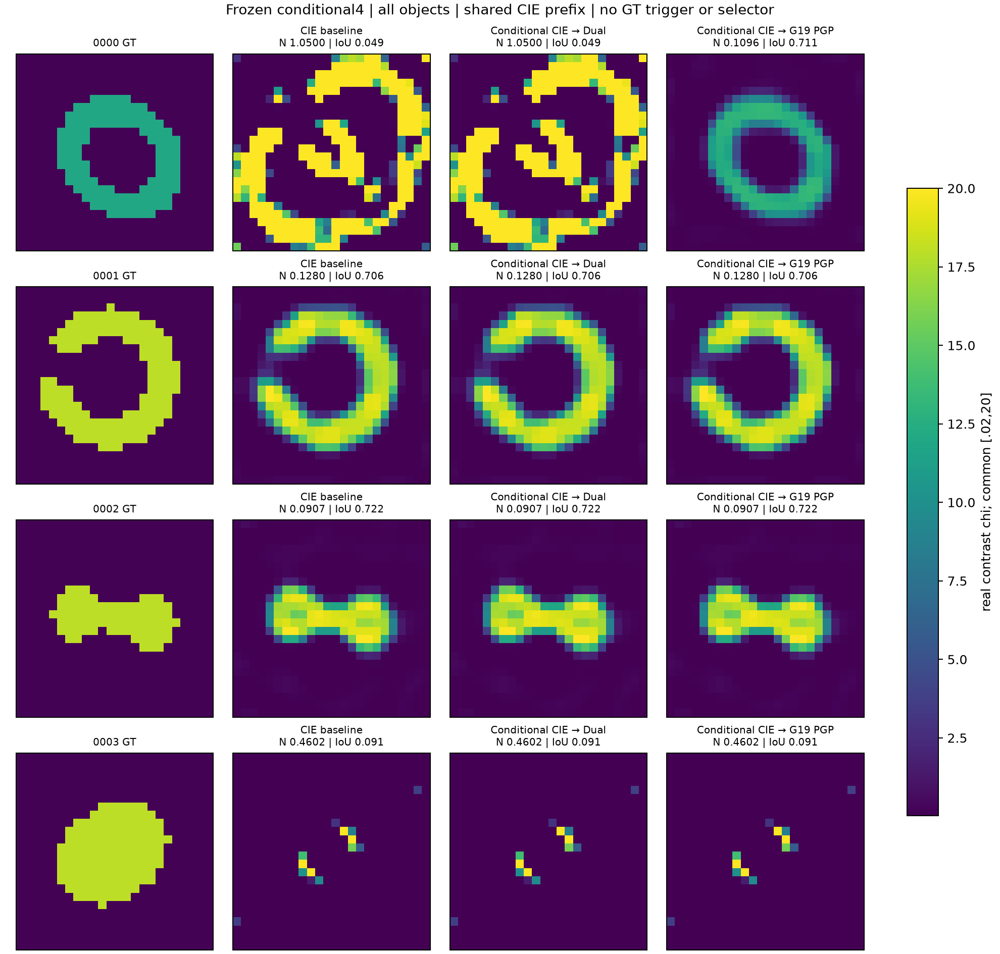

四份新材料：CIE 2/4 → 条件Green19补偿3/4；同触发Dual-CIE重试仍2/4。只有环和包覆体触发。环NRMSE从1.050降至.1096，白化残差135.70降至23.10；包覆体共同失败。未触发的壳和桥原样保留CIE。
部署完整child CPU为692.84 / 1015.55 / 1013.44秒；Green19补偿是CIE的1.46倍，和Dual重试接近。视图共享prefix，不能相加。只有四对象、两次触发，不作总体显著性推断。
